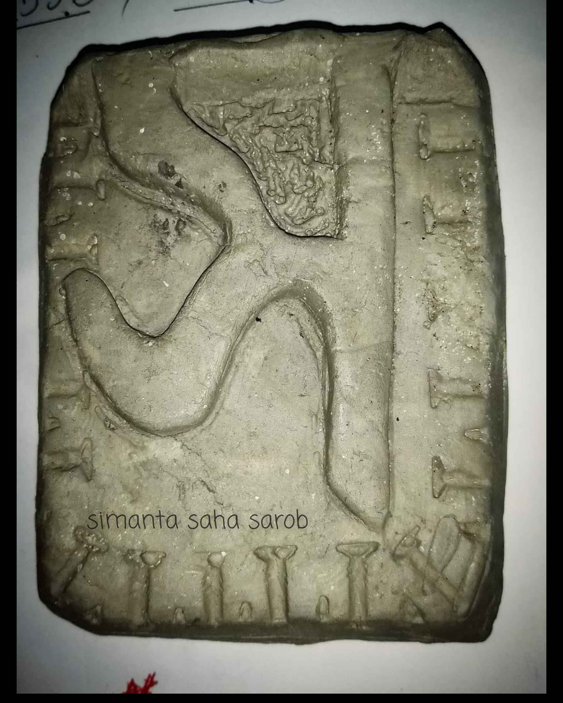

২১ শে ফেব্রুয়ারী ২০১৭
৬ বছর আগে চট্টগ্রামে নাসিরাবাদে (নাসিরাবাদ সরকারি উচ্চ বিদ্যালয়) ঘুরতে গিয়েছিলাম। প্রথম আলো পত্রিকার নিয়মিত পাঠক হওয়া জানা ছিলো বর্ণমেলার কথা৷ সেদিন সেখানে বর্ণমেলা অনুষ্ঠান হচ্ছিলো। আগের বছর ও সেই অনুষ্ঠানে আমি উপস্থিত ছিলাম৷ ১৬-১৭ সালের স্মৃতি, তেমন কিছুই ঠিকঠাক মনে নেই। ঢুকতে হাতের বা দিকে একটা স্টল বসেছিলো। নতুন, আগেরবার এই কনসেপ্ট দেখি নাই৷ সেখানে একটা ভাইয়া সাদা রঙের বক্স টাইপ জিনিসটায় মাটি ঠেসে ঠেসে অক্ষরের আকৃতি দিচ্ছিলো। আমি কৌতূহল বশত সেখানে গিয়ে দাঁড়িয়ে ছিলাম। কাছে থেকে উনার কাজ গুলো দেখছিলাম। উনি ডাক দিয়ে বলে ভাইয়া তোমার নাম কি? আমি নাম বললাম। উনি বলল তুমি কি অক্ষর বানাবে? আমি বললাম হ্যাঁ। উনি জিজ্ঞাস করলো কোন অক্ষর বানাবো। আমি 'অ' বানাতে চাইলাম। সেদিন 'অ' এর মোল্ডটা বা ছাঁচটা ভাঙা ছিলো। উনি এরপর 'স'-র মোল্ডের দিকে দেখিয়ে হাতে মাটি দিয়ে বলল ঐখানে গিয়ে ঠেসে দাও। আমি মাঠি ঠেসে ঠেসে ভিতরে ঢুকাতে থাকলাম। প্রথমে ভেবেছিলাম মোল্ড এটা বোধয় শোলার, পরে হাতে নিয়ে দিখি এটা হোয়াইট সিমেন্টের। অনেক ওজন ছিলো সেটার। তো শেষে ছাঁচ থেকে স বের করলাম। উনি বলল সুন্দর হইছে। অন্তত আশে পাশের লোকজনের থেকে তো সুন্দর হয়েছিলোই। উনি চাকু আর গুনার তার দিয়ে এটার অতিরক্ত অংশ কেটে কাগজে মুরিয়ে হাতে দেয়। আর বলে এটাকে রোদে শুখাবে। এটাই সেই 'স'। রোদে দিয়ে তেমন কাজ হয় নাই, চুলার নিচে দিতে হয়েছিলো৷ এখনো এটা যত্নেই আছে।